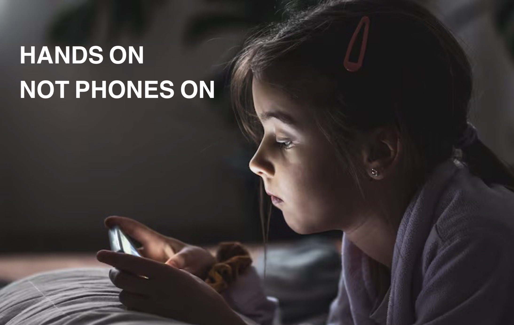
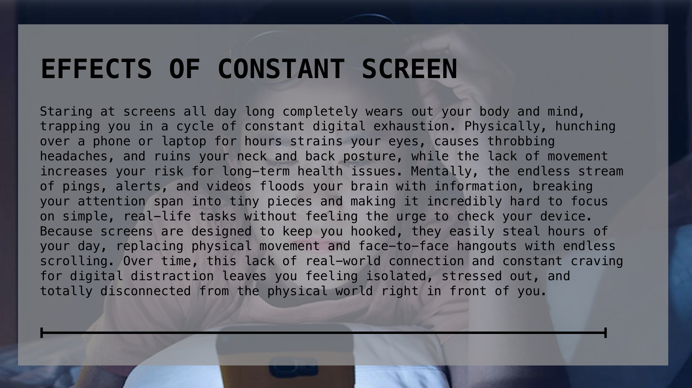
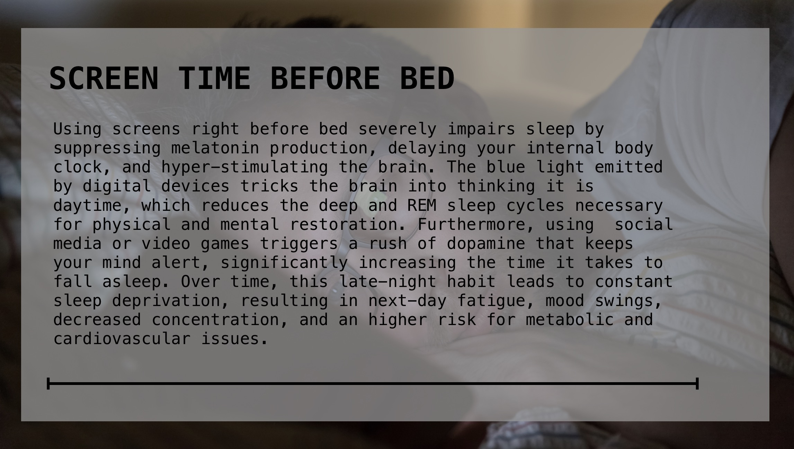
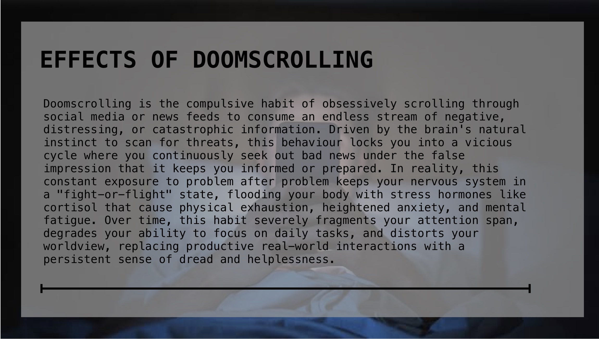

Here, we strive to help you live a healthier, happier life. In today's day and age, people are on screens more and more. This causes problems like poor posture, eye pain and headaches. So we've created a tracker to help you understand your screen time and use advice from our website to get healthier! This is the perfect solution because it helps you understand your time spent and then gives you advice just for you, so it's better than generic solutions and short, impersonal answers. It can also show how much you're improving, the screen time in the past week, and the dates, based on your logging.
We help you make sense of your daily screen time without the guilt and guessing. Using the data YOU log, we organize your screen time into clean, easy-to-read results so you can finally see where your hours actually go. It's easy to lose track of time when you're replying to endless notifications, or scrolling at the end of a long day. Understanding your usage makes a world of difference. Instead of feeling overwhelmed by your devices or relying on screen time limits that you end up disregarding, you get the clarity you need to see your biggest distractions, build healthier habits at your own pace, and make more room for the things you actually care about.


